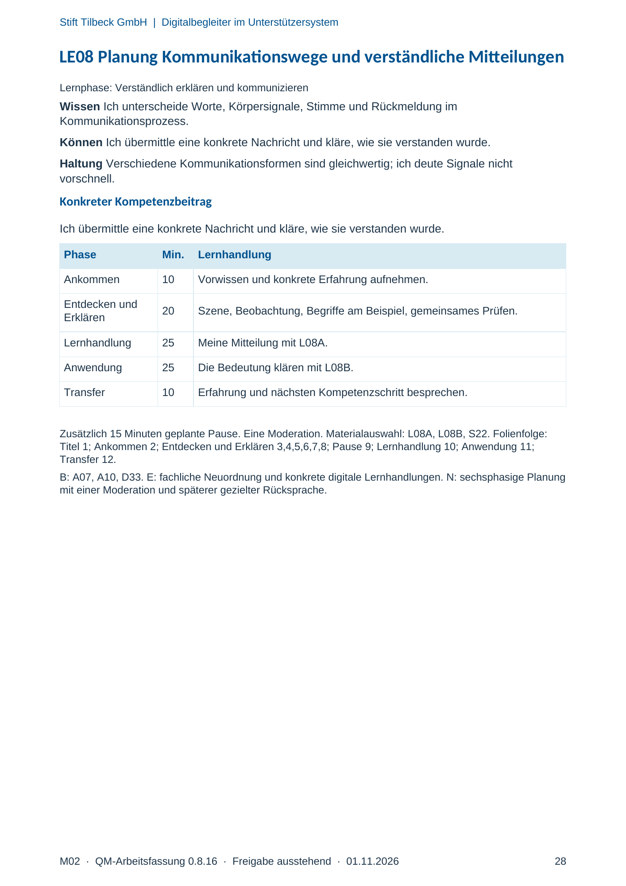
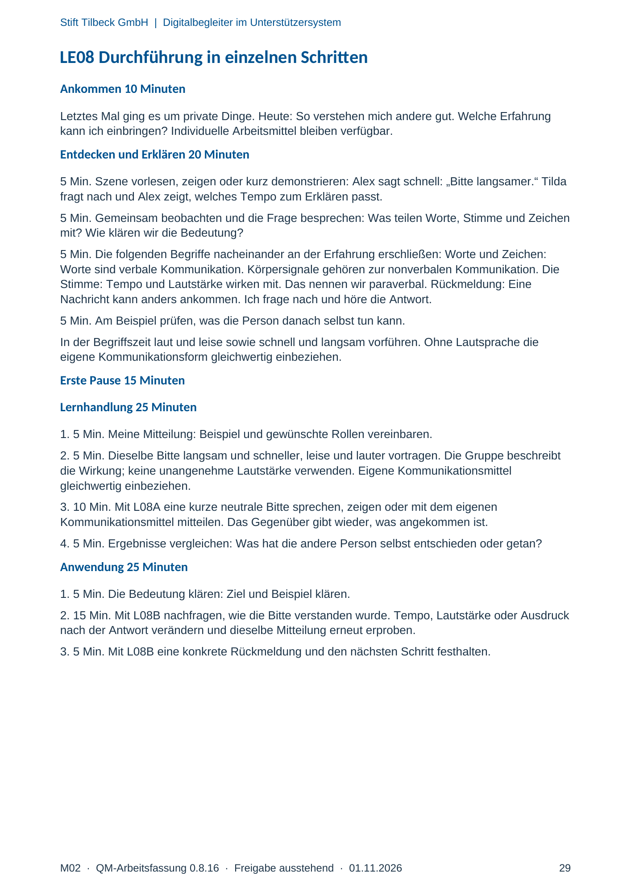
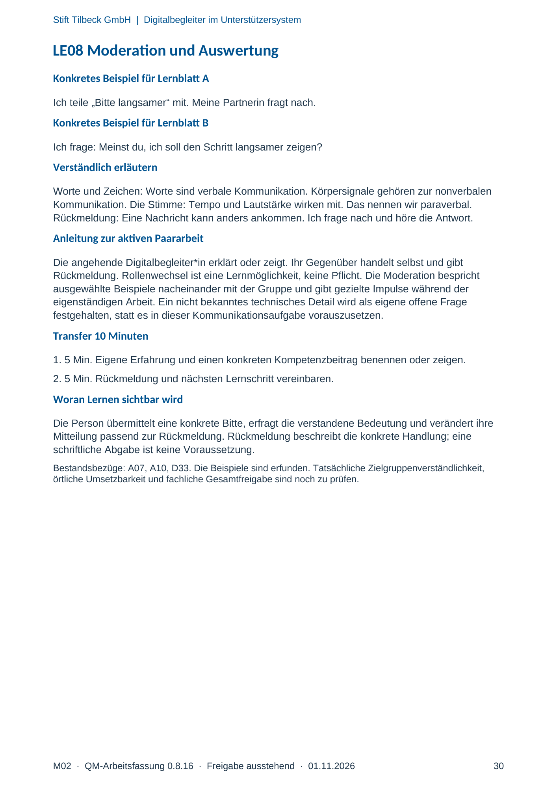

M02 · Originalseite 28, 29, 30
Handbuch und Muster
Gezielte Original-Druckauswahl.
Fragen und Ankreuzfelder werden auf dem Ausdruck bearbeitet. Die Lesefassung speichert keine Antworten.
Lesefassung · Seite 28
Stift Tilbeck GmbH | Digitalbegleiter im Unterstützersystem
M02 · QM-Arbeitsfassung 0.8.16 · Freigabe ausstehend · 01.11.2026 28
LE08 Planung Kommunikationswege und verständliche Mitteilungen
Lernphase: Verständlich erklären und kommunizieren
Wissen Ich unterscheide Worte, Körpersignale, Stimme und Rückmeldung im
Kommunikationsprozess.
Können Ich übermittle eine konkrete Nachricht und kläre, wie sie verstanden wurde.
Haltung Verschiedene Kommunikationsformen sind gleichwertig; ich deute Signale nicht
vorschnell.
Konkreter Kompetenzbeitrag
Ich übermittle eine konkrete Nachricht und kläre, wie sie verstanden wurde.
Phase Min. Lernhandlung
Ankommen 10 Vorwissen und konkrete Erfahrung aufnehmen.
Entdecken und
Erklären 20 Szene, Beobachtung, Begriffe am Beispiel, gemeinsames Prüfen.
Lernhandlung 25 Meine Mitteilung mit L08A.
Anwendung 25 Die Bedeutung klären mit L08B.
Transfer 10 Erfahrung und nächsten Kompetenzschritt besprechen.
Zusätzlich 15 Minuten geplante Pause. Eine Moderation. Materialauswahl: L08A, L08B, S22. Folienfolge:
Titel 1; Ankommen 2; Entdecken und Erklären 3,4,5,6,7,8; Pause 9; Lernhandlung 10; Anwendung 11;
Transfer 12.
B: A07, A10, D33. E: fachliche Neuordnung und konkrete digitale Lernhandlungen. N: sechsphasige Planung
mit einer Moderation und späterer gezielter Rücksprache.
Originalseite ansehen

Lesefassung · Seite 29
Stift Tilbeck GmbH | Digitalbegleiter im Unterstützersystem
M02 · QM-Arbeitsfassung 0.8.16 · Freigabe ausstehend · 01.11.2026 29
LE08 Durchführung in einzelnen Schritten
Ankommen 10 Minuten
Letztes Mal ging es um private Dinge. Heute: So verstehen mich andere gut. Welche Erfahrung
kann ich einbringen? Individuelle Arbeitsmittel bleiben verfügbar.
Entdecken und Erklären 20 Minuten
5 Min. Szene vorlesen, zeigen oder kurz demonstrieren: Alex sagt schnell: „Bitte langsamer.“ Tilda
fragt nach und Alex zeigt, welches Tempo zum Erklären passt.
5 Min. Gemeinsam beobachten und die Frage besprechen: Was teilen Worte, Stimme und Zeichen
mit? Wie klären wir die Bedeutung?
5 Min. Die folgenden Begriffe nacheinander an der Erfahrung erschließen: Worte und Zeichen:
Worte sind verbale Kommunikation. Körpersignale gehören zur nonverbalen Kommunikation. Die
Stimme: Tempo und Lautstärke wirken mit. Das nennen wir paraverbal. Rückmeldung: Eine
Nachricht kann anders ankommen. Ich frage nach und höre die Antwort.
5 Min. Am Beispiel prüfen, was die Person danach selbst tun kann.
In der Begriffszeit laut und leise sowie schnell und langsam vorführen. Ohne Lautsprache die
eigene Kommunikationsform gleichwertig einbeziehen.
Erste Pause 15 Minuten
Lernhandlung 25 Minuten
1. 5 Min. Meine Mitteilung: Beispiel und gewünschte Rollen vereinbaren.
2. 5 Min. Dieselbe Bitte langsam und schneller, leise und lauter vortragen. Die Gruppe beschreibt
die Wirkung; keine unangenehme Lautstärke verwenden. Eigene Kommunikationsmittel
gleichwertig einbeziehen.
3. 10 Min. Mit L08A eine kurze neutrale Bitte sprechen, zeigen oder mit dem eigenen
Kommunikationsmittel mitteilen. Das Gegenüber gibt wieder, was angekommen ist.
4. 5 Min. Ergebnisse vergleichen: Was hat die andere Person selbst entschieden oder getan?
Anwendung 25 Minuten
1. 5 Min. Die Bedeutung klären: Ziel und Beispiel klären.
2. 15 Min. Mit L08B nachfragen, wie die Bitte verstanden wurde. Tempo, Lautstärke oder Ausdruck
nach der Antwort verändern und dieselbe Mitteilung erneut erproben.
3. 5 Min. Mit L08B eine konkrete Rückmeldung und den nächsten Schritt festhalten.
Originalseite ansehen

Lesefassung · Seite 30
Stift Tilbeck GmbH | Digitalbegleiter im Unterstützersystem
M02 · QM-Arbeitsfassung 0.8.16 · Freigabe ausstehend · 01.11.2026 30
LE08 Moderation und Auswertung
Konkretes Beispiel für Lernblatt A
Ich teile „Bitte langsamer“ mit. Meine Partnerin fragt nach.
Konkretes Beispiel für Lernblatt B
Ich frage: Meinst du, ich soll den Schritt langsamer zeigen?
Verständlich erläutern
Worte und Zeichen: Worte sind verbale Kommunikation. Körpersignale gehören zur nonverbalen
Kommunikation. Die Stimme: Tempo und Lautstärke wirken mit. Das nennen wir paraverbal.
Rückmeldung: Eine Nachricht kann anders ankommen. Ich frage nach und höre die Antwort.
Anleitung zur aktiven Paararbeit
Die angehende Digitalbegleiter*in erklärt oder zeigt. Ihr Gegenüber handelt selbst und gibt
Rückmeldung. Rollenwechsel ist eine Lernmöglichkeit, keine Pflicht. Die Moderation bespricht
ausgewählte Beispiele nacheinander mit der Gruppe und gibt gezielte Impulse während der
eigenständigen Arbeit. Ein nicht bekanntes technisches Detail wird als eigene offene Frage
festgehalten, statt es in dieser Kommunikationsaufgabe vorauszusetzen.
Transfer 10 Minuten
1. 5 Min. Eigene Erfahrung und einen konkreten Kompetenzbeitrag benennen oder zeigen.
2. 5 Min. Rückmeldung und nächsten Lernschritt vereinbaren.
Woran Lernen sichtbar wird
Die Person übermittelt eine konkrete Bitte, erfragt die verstandene Bedeutung und verändert ihre
Mitteilung passend zur Rückmeldung. Rückmeldung beschreibt die konkrete Handlung; eine
schriftliche Abgabe ist keine Voraussetzung.
Bestandsbezüge: A07, A10, D33. Die Beispiele sind erfunden. Tatsächliche Zielgruppenverständlichkeit,
örtliche Umsetzbarkeit und fachliche Gesamtfreigabe sind noch zu prüfen.
Originalseite ansehen
